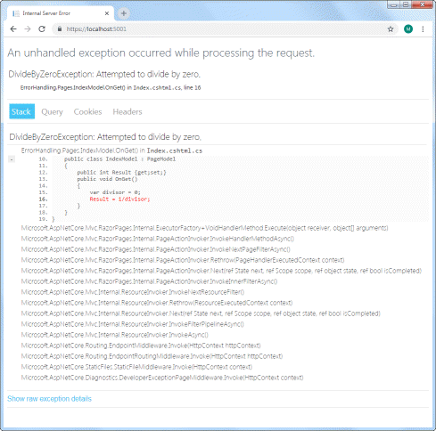
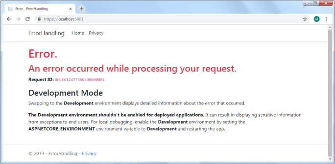
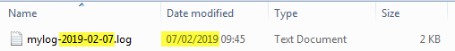

Exceptions in .NET represent an error condition in an executing program. Error conditions can come about as a result of a large number of causes, each represented by its own exception type. Most exceptions arise from logical errors in code, such as an attempt to work with an object that has not been instantiated (NullRefrenceException), or to divide by zero (DivideByZeroException). Other types of exceptions result from technical issues, which may or may not be temporary. Examples of such issues might include a database or mail server being unavailable, or insufficient file system permissions.
The recommendation is that you should try to minimise the impact of exceptions (otherwise known as handling them) by coding defensively rather than allowing them to crash your application. Options include wrapping code that might raise exceptions in try-catch blocks, and validating user input instead of assuming that it conforms to expectations. Despite your best efforts, however, chances are that even in a moderately complex application, there will be something that you overlooked that will go wrong.
Default Exception Handling
The standard project template for a Razor Page site includes code that configures global exception handling middleware which is responsible for capturing any unhandled exception and dealing with it:
public void Configure(IApplicationBuilder app, IHostingEnvironment env)
{
if (env.IsDevelopment())
{
app.UseDeveloperExceptionPage();
}
else
{
app.UseExceptionHandler("/Error");
}
}
This strategy offers three benefits:
- It provides one central place to configure exception handling.
- It reduces the amount of
try-catchblocks that you need to sprinkle throughout the application. - It enables you to handle exceptions in a different way, depending on the environment.
When you are running the site in development, the application is configured to use the Developer Exception Page, which is designed to output as much detail about the exception as possible to make it easier to diagnose the root cause:

The middleware captures unhandled exceptions within the processing pipeline and ensures that the correct HTTP status code is returned along with the HTML output above.
This information is very useful during the development phase of a web site, but it should not be displayed once the site has gone live. Apart from the fact that it is pretty unfriendly from a user's point of view, the details revealed here might prove helpful to someone whose intentions are not honourable.
So the default site is configured to use ExceptionHandlerMiddleware in all other environments. This is registered in Startup by the UseExceptionHandler method, which takes the relative path to a page that should be executed in the event that an unhandled exception occurs while the application is running:

This page (Error.cshtml) forms part of the standard template and is fully customisable.
Logging Error Details
Now that the application reacts appropriately when an exception occurs, you need to be able to review the details of any exception so that you can implement strategies to prevent it happening in future, or to handle it more gracefully where possible. So you need to be able to log as much information about the exception as possible.
Logging is included as part of the ASP.NET Core framework with a number of built-in logging providers. The simplest way to collect and store logs is in a file, but, none of the built-in providers enable this (at the moment). Therefore you will need to rely on a third party logging component. There are several good, free and open source ones that work with .NET Core, with NLog probably being one of the best known.
Installing and Configuring NLog
NLog is available as a Nuget package and can be installed via the Package Manager Console in Visual Studio using the following commands:
install-package NLog
install-package NLog.Web.AspNetCore
Alternatively, if you are using Visual Studio Code, you can use the dotnet CLI to install the required packages:
dotnet add package NLog
dotnet add package NLog.Web.AspNetCore
Once installed, you need to configure options for NLog. You can do this in two ways: you can provide configuration in an xml-based file, or you can use the configuration API to set the configuration programmatically.
Using A Config File
First, create a file named nlog.config in the root folder of your application. Then add the following to it:
<?xml version="1.0" encoding="utf-8" ?>
<nlog xmlns="http://www.nlog-project.org/schemas/NLog.xsd"
xmlns:xsi="http://www.w3.org/2001/XMLSchema-instance"
autoReload="true">
<extensions>
<add assembly="NLog.Web.AspNetCore"/>
</extensions>
<targets>
<target xsi:type="File" name="myLogFile" fileName="c:\logs\mylog-${shortdate}.log"
layout="${longdate}|${event-properties:item=EventId_Id}|${uppercase:${level}}|${logger}|${message} ${exception:format=tostring}" />
</targets>
<rules>
<logger name="*" minlevel="Warn" writeTo="myLogFile" />
</rules>
</nlog>
NLog works with targets and rules. A target is the destination for logging output. NLog supports a huge number of targets, but the one that we are using is File. The file name and the layout of the log are specified using templates composed from layout renderers.
Rules affect loggers. The simple one added above specifies that all loggers in the application should write to the the target named myLogFile, but only if the log level is WARN or above. Log levels are (in ascending order of severity):
- TRACE
- DEBUG
- INFO
- WARN
- ERROR
- FATAL
Finally, the logging configuration is registered in the Main method, and logging is configured as part of the CreateWebHostBuilder method call:
using System;
using System.Collections.Generic;
using System.IO;
using System.Linq;
using System.Threading.Tasks;
using Microsoft.AspNetCore;
using Microsoft.AspNetCore.Hosting;
using Microsoft.Extensions.Configuration;
using Microsoft.Extensions.Logging;
using NLog.Web;
namespace ErrorHandling
{
public class Program
{
public static void Main(string[] args)
{
var logger = NLog.Web.NLogBuilder.ConfigureNLog("nlog.config").GetCurrentClassLogger();
CreateWebHostBuilder(args).Build().Run();
}
public static IWebHostBuilder CreateWebHostBuilder(string[] args) =>
WebHost.CreateDefaultBuilder(args)
.UseStartup<Startup>()
.ConfigureLogging(logging =>
{
logging.ClearProviders();
logging.SetMinimumLevel(Microsoft.Extensions.Logging.LogLevel.Trace);
})
.UseNLog();
}
}
If you prefer to use the configuration API, the equivalent configuration is created using the following code within the Main method:
public static void Main(string[] args)
{
var config = new LoggingConfiguration();
// targets
var fileTarget = new FileTarget("fileTarget")
{
FileName = @"c:\logs\mylog-${shortdate}.log",
Layout = "${longdate}|${event-properties:item=EventId_Id}|${uppercase:${level}}|${logger}|${message} ${exception:format=tostring}"
};
config.AddTarget(fileTarget);
// rules
config.AddRuleForOneLevel(NLog.LogLevel.Warn, fileTarget);
config.AddRuleForOneLevel(NLog.LogLevel.Error, fileTarget);
config.AddRuleForOneLevel(NLog.LogLevel.Fatal, fileTarget);
LogManager.Configuration = config;
CreateWebHostBuilder(args).Build().Run();
}
Now when you encounter an exception, details will be written to the specified log file. The file name template includes the ${shortdate} renderer, which ensures that a new log file will be created each day.
